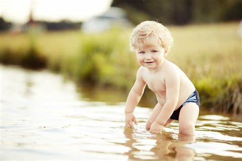

Reading

when it comes to reading Generally speaking, reading is considered a hobby as it is an activity that is normally done for entertainment typically during leisure time. However, reading can be made a habit when done on a regular basis. For some, reading can also be a passion,while a few others may consider it a pastime.You can also get addicted to reading.To understand why it can be any or a combination of these aspects, you’ll have to knowwhat each concept entails and then look at whether reading fits the definition.In most cases, readers don’t categorize their reading as being a habit or hobby or any of the other categories,but after you’ve read this article you’ll have an idea as to what type of activity your reading actually is! for additional info : click here
Swimming
The report highlights the enormous potential swimming and aquatic activity has to support the health of the population due to its popularity and accessibility across the lifetime.The unique properties of water make swimming perfect for people of all ages to exercise, particularly those with injuries, impairments, long term health conditions, or those who struggle to exercise on land.The report found evidence that swimmers live longer, that regular swimming helps older people stay mentally and physically fit, and participation in swimming lessons can help children to develop physical, cognitive and social skills quicker.Swimming has a positive impact on a range of physical and mental health conditions including obesity, cancer, cerebral palsy, and pulmonary disease.There is increasing evidence that swimming is a cost-effective activity that will help to save the National Health Service money.Aquatic activity not only helps develop aerobic fitness, but is also good for the development of strength and balance which are key components of the CMO guidelines for health.There is emerging evidence on the contribution of swimming to support the healthy development of children, and how this can contribute to their physical, mental and social skills. for additional info click here
Running
Running is one of the best forms of exercise for losing or maintaining a consistent weight. You will find that it is a leading way to burn off extra calories and that it is the second most effective exercise in terms of calories burned per minute, following only after cross country skiing. Not all of the benefits of running are physical. Running can provide an noticeable boost to your confidence and self-esteem. By setting and achieving goals, you can help give yourself a greater sense of empowerment that will leave you feeling much happier. Stress can actually cause a number of health and mood problems. It can also diminish appetite and sleep quality. When you run, you force your body to exert excess energy and hormones. Running also helps to reduce your chances of developing tension headaches. When you are depressed, the last thing you likely want to do is to get up and go for a run. Yet you will find that after only a few minutes of running, your brain will start to secrete hormones that naturally improve your mood. In fact, there are few things in the world that can better or more rapidly treat depression than exercise such as running. for more info click here